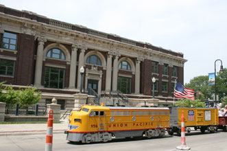
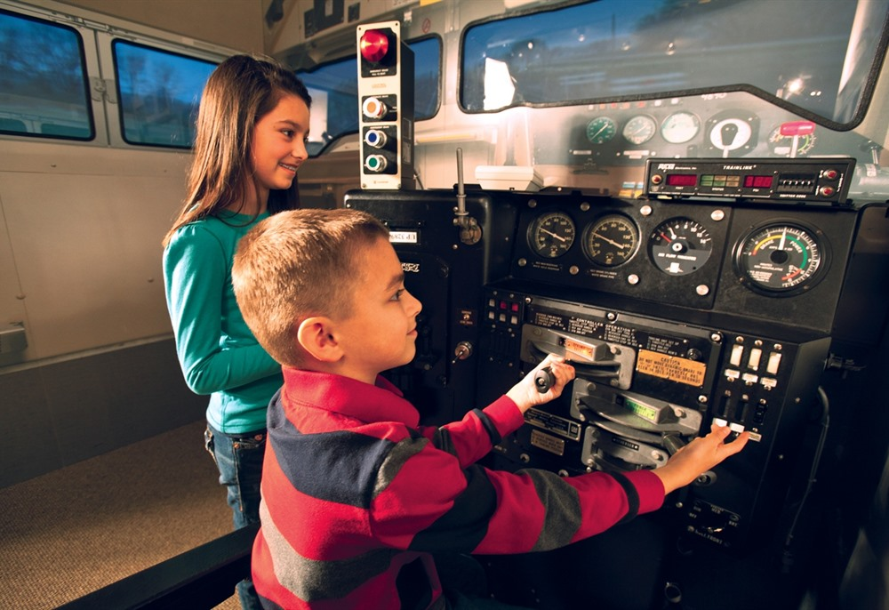

I am the student of Management Information System(MIS) first year at University of Nebraska, Omaha. I have worked as Software developer in Union Pacific Railroad for almost 10 years. Railroads always fascinated me and I got the chance to work with America's one of the best railroad company. Union Pacific museum is one of my favourite places to visit.
The Union Pacific Railroad Museum is located in downtown Council Bluffs, Iowa, in the beautiful and unique Beaux Arts-style building that formerly housed the Council Bluffs Carnegie Free Public Library. The perfect place for train lovers.
Address : 200 Pearl St, Council Bluffs, IA 51503
- 

- 
Used Resources:
- W3 schools
- https://en.wikipedia.org/wiki/Union_Pacific_Railroad
- Rail News: Union Pacific Railroad
- Union Pacific Museum
- UPRR Images (google images)
- UNO weblinks